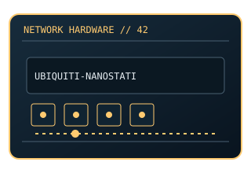

[ MODEL-SPECIFIC NETWORK HARDWARE ]
Ubiquiti NanoStation 5AC Loco NS-5ACL
Compact outdoor 5GHz airMAX ac CPE/bridge radio. This entry uses the labeled manufacturer model identifier and cites primary product/support documentation.

MODEL IDENTIFICATION: Match the complete model/part number and hardware revision on the item label to manufacturer documentation. Do not apply this entry to near-name variants.
Exact specifications and compatibility
| Cataloged model | Ubiquiti NanoStation 5AC Loco NS-5ACL |
|---|---|
| Dedicated subcategory | Wireless bridges and CPE |
| Bus / host interface | 1 × 10/100/1000 Ethernet; passive PoE powered. |
| Ports / physical interfaces | Integrated directional antenna; one Gigabit Ethernet port. |
| PHY, radio or protocol | 5GHz 802.11ac-based airMAX proprietary point-to-point/point-to-multipoint radio; not a standard Wi-Fi client bridge. |
| PoE | Passive PoE-in using the specified injector; not a standard 802.3af PoE output device. |
| Link-rate vs throughput | AirMAX PHY/radio rates vary by channel, region and signal; Ethernet link rate is 1Gb/s maximum. Link rates are nominal negotiated/PHY specifications, not measured application throughput; no measured specimen result is claimed. |
| Firmware / driver support | airOS firmware and UISP/management tools; firmware/support depends on model and regulatory region. |
| Compatibility checks | Use the specified PoE injector and grounding/mounting instructions; align directional antennas and comply with 5GHz rules. |
Model-specific notes
A passive-PoE injector is not interchangeable with an arbitrary 802.3af source.
Primary manufacturer sources
- Ubiquiti NanoStation 5AC Loco product documentationManufacturer product specification or documentation for the exact model/family.
- Manufacturer support and compatibility resourcesFirmware, driver, compatibility, revision or support details; applicability may depend on the exact hardware revision and region.
Vendor maximum rates are not test results. Confirm regional variants, hardware revision and current support status with the manufacturer.